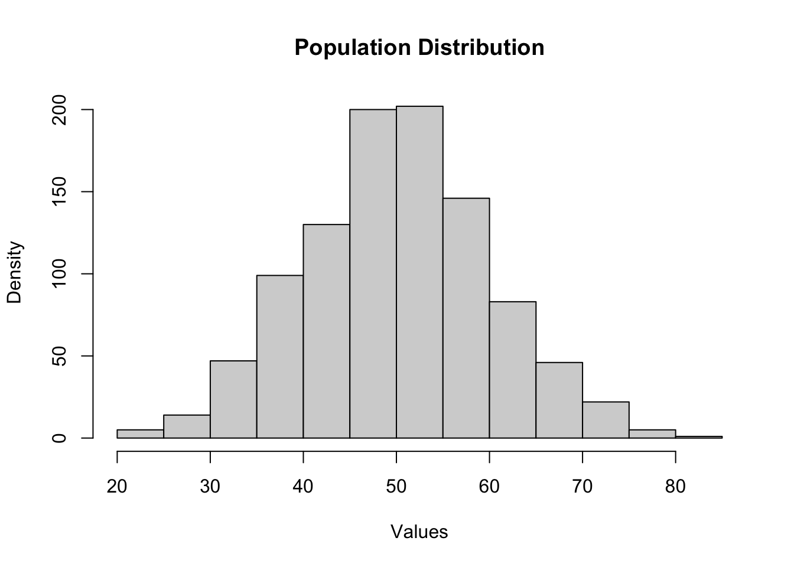
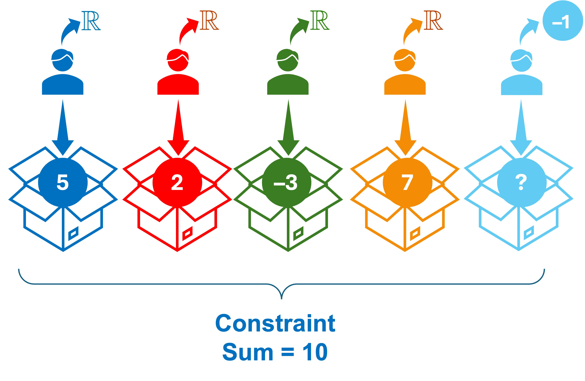

Click to show/hide code
set.seed(123)
population <-
rnorm(
1000,
mean = 50,
sd = 10
)
hist(
population,
main = "Population Distribution",
xlab = "Values",
ylab = "Density"
)
November 10, 2024
In the previous chapter, we discussed the measures of variability.
Specifically, the variance was discussed as a measure of variability that quantifies how close the observations are to the mean.
Intuitively, this is achieved by calculating the average of deviations \((D\)) of each observation from the mean:
\[ D = \frac{1}{n} \displaystyle \sum_{i=1}^{n} (x_i - \bar{x}) \]
\[ s^2 = \frac{1}{n-1} \displaystyle \sum_{i=1}^{n} (x_i - \bar{x})^2 \]
The above formula has two distinct differences from the previous intuitive definition, namely:
Using squared deviations instead of the deviations themselves:
In a previous chapter, we described that the sum of deviations of the observations from the arithmetic mean is always zero because the negative deviations cancel out the positive deviations. This cuses the variance to be zero.
Therefore, squaring the deviations overcomes this issue by making all deviations positive.
The denominator is \((n-1)\) instead of \((n)\):
This is known as Bessel’s correction (obtained by multiplying the uncorrected sample variance \(s^2_n = \displaystyle \frac{1}{n} \displaystyle \sum_{i=1}^{n} (x_i - \bar{x})^2\) by \(\displaystyle \frac{n}{n-1}\)) and is used to correct the bias in the estimation of the population variance from the sample variance.
When using a sample to estimate the population variance, the population mean is unknown, in most of the cases, so the sample mean \((\bar{x})\) is used to estimate the population mean \((\mu)\).
Using \(\bar{x}\) as an estimate of \(\mu\) results in underestimation of the population variance, particularly when the sample size is small. This happens because the sum of squares of the deviations of the observations from the sample mean will always be smaller than the sum of squares of the deviations of the observations from the population mean (except when \(\bar{x} = \mu\)).
Therefore, using \((n-1)\) in the denominator corrects this underestimation and makes the sample variance an unbiased estimator of the population variance.
Let’s illustrate this concept with a simple simulation:
Assume that we have a population of \(1000\) observations:
The population mean and variance are:
[1] "Population mean: 50.16"[1] "Population variance: 98.25"In this particular example, the population mean and variance are known because this is a simulation and we generated the data.
In practice, the population mean and variance are unknown and we use the sample mean and variance to estimate them.
Now, let’s draw a sample of \(10\) observations from this population and calculate the uncorrected sample variance:
[1] "Sample mean: 50.45"[1] "Uncorrected sample variance: 89.63"As you can see that the \(\bar{x} = 50.45\) and is used as an unbiased estimator of the population mean \(\mu = 50.16\), however, the uncorrected sample variance \(s_n^2 = 89.63\) underestimates the population variance \(\sigma^2 = 98.25\).
Let’s apply Bessel’s correction to the sample variance:
The corrected sample variance is \(s^2 = 99.59\) is closer to the population variance than the uncorrected sample variance.
On repeated sampling (i.e., taking many samples with the same size and calculating the sample variance for each sample), the average of the corrected sample variances will be closer to the population variance than the average of the uncorrected sample variances (i.e., the corrected sample variance is an unbiased estimator of the population variance):
[1] "Mean of 1000 uncorrected sample variances: 88.79"[1] "Mean of 1000 corrected sample variances: 98.32"The division by \((n-1)\) in the sample variance formula can also be viewed as a way to adjust for the loss of one degree of freedom when estimating the population variance from the sample variance:
Degrees of freedom \((df)\) is a mathematical concept that refers to the number of independent pieces of information that are free to vary in the presence of a set of constraints.
This concept will be revisited in upcoming chapters.
Let’s consider a simple example to understand this concept:
Assume that we have \(5\) boxes that each needs to be filled with a real number such that the sum of the numbers is \(10\) (this is referred to as a constraint) and we ask \(5\) persons to choose the numbers they like as illustrated in the following image: 
The first person is free to choose any real number; he chooses \(5\) to fill the first box without being constrained by the sum of the numbers.
The second person is also free to choose any real number; he chooses \(2\) to fill the second box without being constrained by the sum of the numbers.
The third person is also free to choose any real number; he chooses \(-3\) to fill the third box without being constrained by the sum of the numbers.
The fourth person is also free to choose any real number; he chooses \(7\) to fill the fourth box without being constrained by the sum of the numbers.
On the other contrary, the fifth person is not free to choose any real number; he must choose the number \(-1\) to fill the fifth box in order to satisfy the constraint that the sum of the numbers is \(10\).
Therefore, there are only \(4\) independent pieces of information that are free to vary (i.e., the first four persons).
The fifth person is not free to choose any real number rather his choice is dependent on the choices of the first four persons due to the constraint imposed on the sum of the numbers.
Therefore, we say that we lose one degree of freedom (i.e., \(df = n - 1\)).
This concept is also applicable to the estimation of the sample variance; which involves the estimation of \(\mu\) from \(\bar{x}\). Using \(\bar{x}\) in the calculation of the sample variance implies that the pieces of informatios \((x_1 - \bar{x})^2, (x_2 - \bar{x})^2, \ldots, (x_n - \bar{x})^2\), which are used for the computation of the variance, are not independent because they are constrained by the \(\bar{x}\). Simply, there are only \(n-1\) independent observations that are free to vary, while the last one can be determined by from the first \(n-1\) observations and \(\bar{x}\)).
Generally, the degrees of freedom for an estimate is equal to the number of observations minus the number of population parameters estimated while calculating the estimate in question.
Applying this rule to the sample variance, we estimate the population mean \(\mu\) from the sample mean \(\bar{x}\), which is one parameter estimated from the sample while computing the sample variance. Therefore, the degrees of freedom for the sample variance is \(n - 1\).